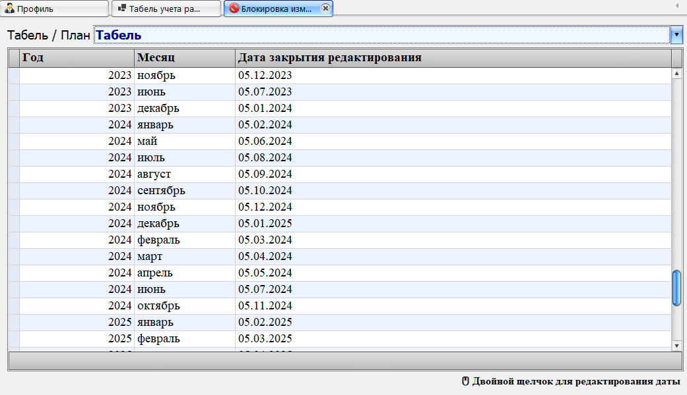

Данная форма предназначена для установки даты, до которой разрешено редактирование табеля или плана.

В верхней части формы расположен список выбора режима:
Табель / План — определяет, какие записи будут отображены в таблице.
После выбора режима автоматически отображается список периодов (месяц и год).
В таблице представлены:
- Год
- Месяц
- Дата закрытия редактирования
Дата закрытия определяет, до какого числа разрешено вносить изменения в табель или план.
Для изменения даты необходимо дважды щелкнуть по строке.
Откроется форма редактирования, в которой можно выбрать новую дату.
После сохранения изменения применяются сразу и отображаются в таблице.
В нижней части формы отображается подсказка: двойной щелчок для редактирования даты.